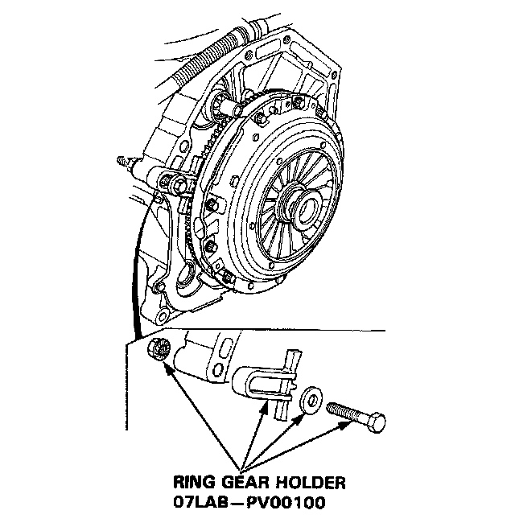
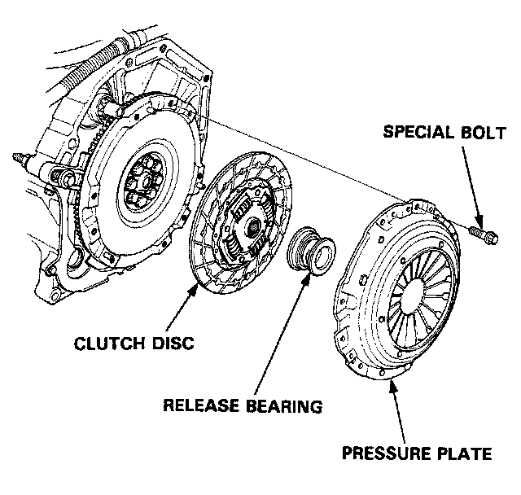
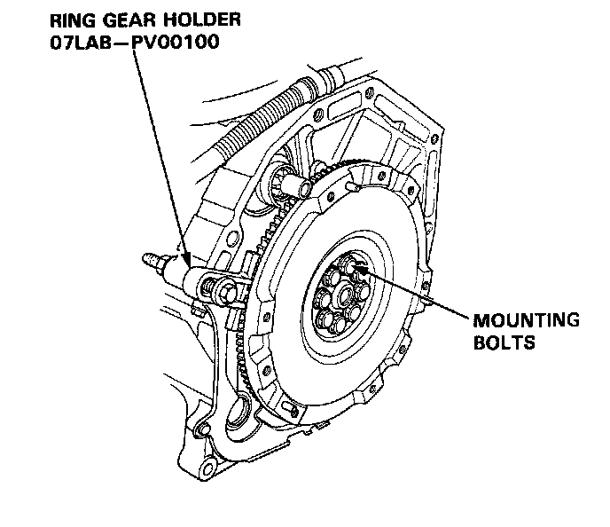
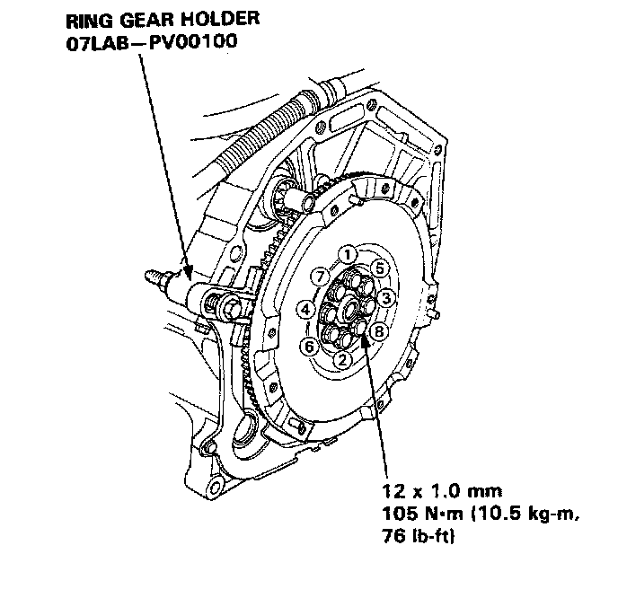
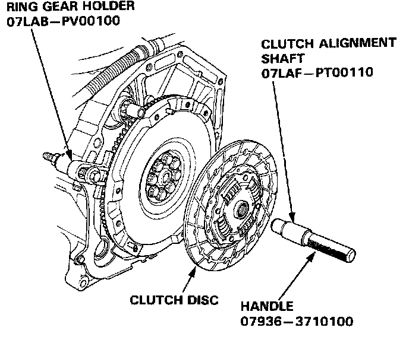
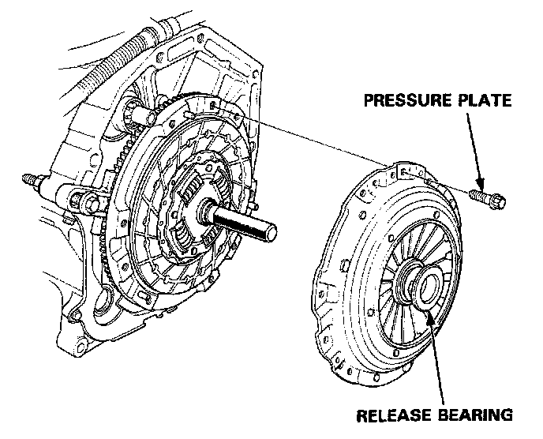
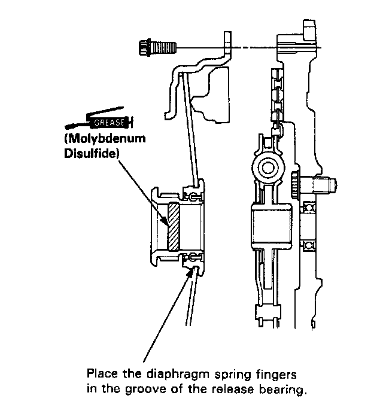
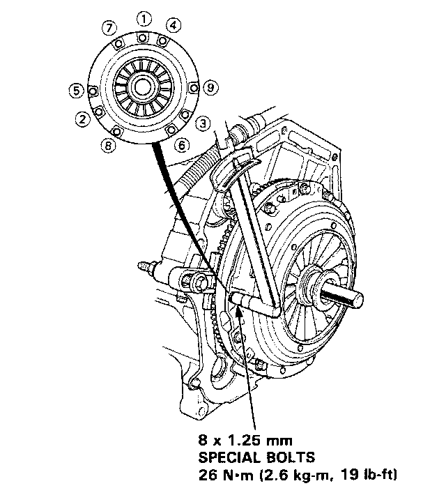

Clutch Replacement

1. Install the Ring Gear Holder as shown using ring gear holder O7LAB-PVOO1OO

2. To prevent warping, unscrew the pressure plate mounting bolts two turns at a time in a criss-cross pattern, then remove the pressure plate and the clutch disc.
3. Remove the release bearing from the pressure plate.

4. Remove the flywheel mounting bolts and the flywheel.
5. Align the hole in the flywheel with the crankshaft dowel pin and install the flywheel. Install the bolts finger-tight.

6. Install the special tool, then torque the flywheel bolts in a criss-cross pattern as shown. 105 Nm (110.5 kg-m. 76 lb-ft)
7. Install the ring gear holder.
8. Install the clutch disc.

9. Install the clutch alignment shaft.
10. Install the release bearing on the pressure plate.

11. Install the pressure plate.
NOTE: After installing the pressure plate, make sure the release bearing did not come off.

12. Torque the bolts in a criss-cross pattern as shown. Tighten them two turns at a time to prevent warping the diaphragm spring. Torque the special bolts (8 x 1.25 mm) to 26 Nm (2.6 kg-m, 19 lb-ft)
NOTE: After installation, make sure the release bearing does not come off.

13. Remove the alignment tool and ring gear holder.